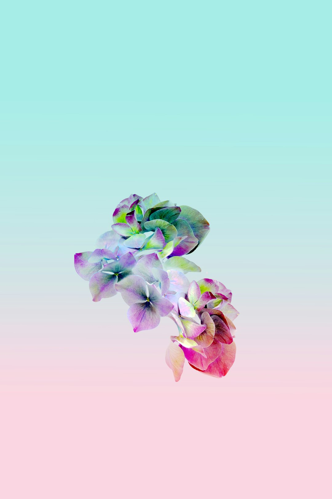
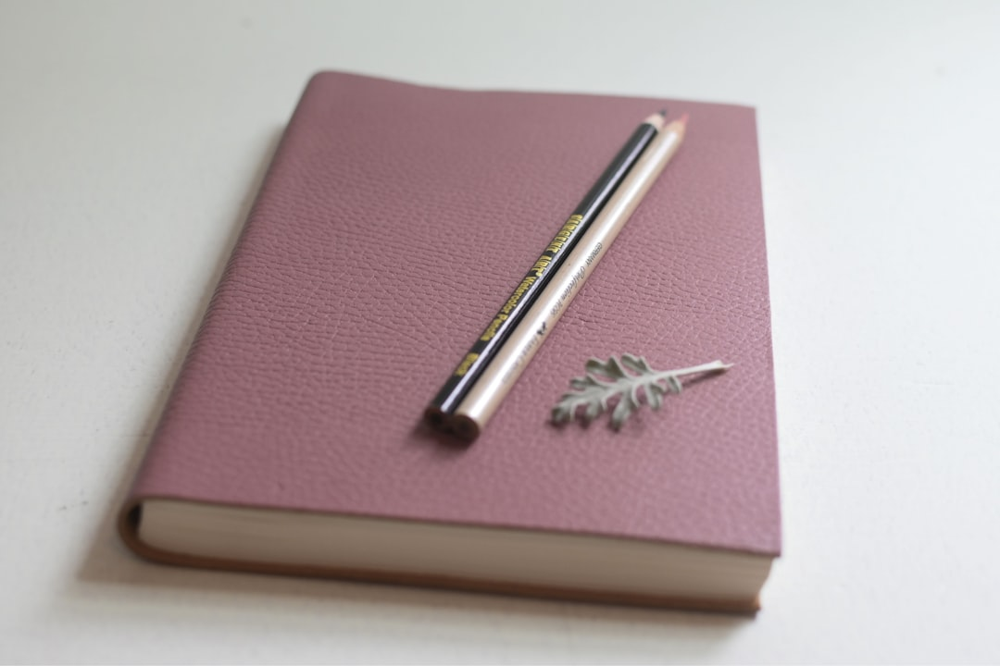

매일 남기는 짧은 일기
오늘의 기분과 한두 문장을 부담 없이 적고, 필요할 때 사진을 곁들여 하루를 남깁니다.
Emotional diary app
오늘 적은 한 줄이, 몇 년 뒤 다시 꺼내 보는 기억이 되도록. CenturyDiary는 짧은 일기와 월별 커버플로우, 해마다 같은 날을 모아보는 100년의 오늘, 자유로운 감성 다이어리와 공유 기능을 함께 담았습니다.
May 2026

Core experience
오늘의 기분과 한두 문장을 부담 없이 적고, 필요할 때 사진을 곁들여 하루를 남깁니다.
한 달 동안 쌓인 기록을 카드처럼 넘겨보며, 지나간 날들의 분위기를 한눈에 느낄 수 있습니다.
1999년 5월 1일, 2000년 5월 1일, 2026년 5월 1일처럼 해마다 같은 날짜의 일기를 한곳에서 이어 봅니다.
이미지와 텍스트를 원하는 위치에 놓고, 크기와 각도를 조절하며 나만의 페이지를 꾸밉니다.
혼자 간직해도 좋고, 나누고 싶은 기록은 사람들과 공유하며 서로의 하루에 조용히 공감할 수 있습니다.
AI 댓글, 의미 기반 검색, 공유된 일기의 자동 번역을 유료 기능으로 제공합니다. 그 외의 기본 기록 기능은 무료로 사용할 수 있습니다.
Designed for memory
CenturyDiary는 보라와 핑크를 중심으로 한 부드러운 색감, 파스텔 종이 같은 배경, 가벼운 카드 UI로 쓰는 부담은 낮추고 다시 펼쳐보는 즐거움은 살렸습니다.
